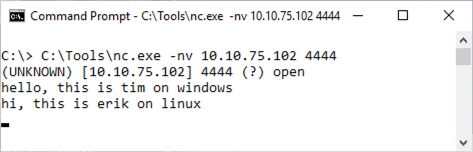

Lab 3.4: Port Pivot Relays
Objectives
- To construct a port-pivoting relay using a Netcat listener and a Netcat client
- To use that relay to pivot through an open port on a system to get access to a service listening on a port that is firewalled, without reconfiguring the service
- To use
iptablesto open specific ports for specific hosts through a Linux firewall
Lab Setup
Ensure that you can ping from the Slingshot Linux image to your Windows machine, and vice versa for this lab.
$ ping YOUR_WINDOWS_IP_ADDRESS
c:\> ping YOUR_LINUX_IP_ADDRESS
Do not type
YOUR_LINUX_IP_ADDRESS; instead, type the IP address of your Linux system.
Lab – Step-by-Step Instructions
Step 1: SSH from Windows to Linux
For this lab, we’ll use the wonderful, free PuTTY SSH client for Windows, which is already installed in your Windows VM. Double-click the PuTTY icon on your desktop to launch it. When it opens, type the IP address of your Linux host and then click Open.
The first time you connect, PuTTY will likely warn you that it doesn’t recognize the host key because this is the first time PuTTY has seen that target system. Accept the system’s key by clicking Yes.

PuTTY will then prompt you as follows:
Login as:
Enter sec560.
When it asks you for the password, enter your password for the sec560 account. (The default password was sec560, but you have likely changed it.)
Exit from your SSH connection by typing exit in the PuTTY window.
Step 2: Adding a firewall rule
Next, we implement a simple firewall rule on our Linux machine to block inbound access to TCP port 22. We use the iptables command to append (-A) a rule to our INPUT filter, blocking the TCP protocol (-p tcp) going to destination port (--dport) 22, with an action of dropping the packet (-j DROP) on interface eth0. The whole command is:
$ sudo iptables -i eth0 -A INPUT -p tcp --dport 22 -j DROP
To verify that our filtering rule works, try to SSH from Windows to Linux using PuTTY again the same way as before: click the icon on the desktop, enter your Linux IP address, then click Open.
After several seconds, the connection should be denied, making PuTTY display an error message of Network error: Connection timed out. We have blocked inbound access on TCP port 22.
Step 3: Setting up the firewall
Now that we’ve blocked inbound TCP port 22, let’s allow in another port, through which we’ll relay.
On your Linux machine, run the following iptables command to allow inbound connections to port 4444:
$ sudo iptables -i eth0 -I INPUT -p tcp --dport 4444 -j ACCEPT
The options with iptables are:
-i eth0- Match packets on the eth0 interface-I INPUT- Insert the rule at the top of the INPUT chain-p tcp- Match TCP packets only--dport 4444- Match packets destined to port 4444-j ACCEPT- Accept the packet ("jump" to ACCEPT)
We can test this rule by setting up a Netcat listener on our Linux system on TCP port 4444:
$ nc -nvlp 4444
There is a lowercase L in the above command; it stands for "listen".
Then from your Windows machine, try to connect to TCP 4444 on your Linux system:
C:\> C:\tools\nc -nv YOUR_LINUX_IP_ADDRESS 4444
Do not type
YOUR_LINUX_IP_ADDRESS; instead, type the IP address of your Linux system.
Type in a word or two to make sure it gets sent between the systems. If it does, you are ready to proceed. Press CTRL-C in Netcat.

If you cannot connect to TCP 4444 from Windows to Linux using Netcat, double-check your iptables rule syntax. You can flush all rules by restarting iptables using the service iptables restart command.
Step 4: The Pivot
Now that we’ve confirmed that our filter is working, let’s bypass it. Start by creating a FIFO on your Linux machine:
$ mknod /tmp/backpipe p
Note: the name
/tmp/backpipeisn't special; it is just a filename. However, thepis required and cannot be changed. The following command would accomplish a similar task:mknod /tmp/timpipe p.
Then use that backpipe FIFO to create a Netcat relay:
$ nc -nvlp 4444 0</tmp/backpipe | nc -nv 127.0.0.1 22 1>/tmp/backpipe
We are forwarding TCP connections that arrive on TCP port 4444 to the localhost system on TCP port 22, where sshd is listening.
Your terminal window should look like this:
sec560@slingshot:~$ mknod /tmp/backpipe p sec560@slingshot:~$ nc -nvlp 4444 0</tmp/backpipe | nc -nv 127.0.0.1 22 1>/tmp/backpipe listening on [any] 4444 ...
Next, go back to your Windows machine and use PuTTY to try to ssh from Windows to Linux on TCP port 4444 on Linux:
You will likely see the security alert again because PuTTY has never seen this key before on this system ON THIS PORT. Accept the security alert by clicking Yes.
You should get a login prompt. Enter sec560 as a user ID, followed by your sec560 account password. The connection should work.
Note that our relay works only for one connection. If you drop the session, you have to restart the relay.
Also, verify that you have terminal access via that PuTTY connection by running a command that requires a terminal, such as vi. You can use vi to edit a file like /tmp/stuff.txt:
$ vi /tmp/stuff.txt
Exit vi by pressing Esc, followed by a colon (:), followed by q! and Enter.
Step 5: Analyzing the traffic
To get a feel for what we’ve done, open up two new terminal windows on Linux while the ssh connection is still up. We are going to sniff the traffic coming into our system on eth0 with one instance of tcpdump. We’ll use another instance of tcpdump to sniff the traffic going across our local loopback adapter.
In one window, invoke tcpdump as follows:
$ sudo tcpdump -nn -i eth0 port 4444
The options for tcpdump are:
-nn- Don't resolve name or port numbers-i eth0- Match packets on the eth0 interfaceport 4444- Matched packets with a source or destination port of 4444
The above command will display the packets on the screen.
In the other window, invoke tcpdump like this:
$ sudo tcpdump -nn -i lo port 22
This will show us traffic on the local loopback (lo) interface.
Now press Enter a couple of times in your PuTTY client on Windows. You should see the TCP port 4444 traffic going from Windows to Linux in your eth0 sniffer. You should likewise see the packets that are associated with the forwarded connection across the loopback interface in your lo sniffer. We have forwarded a connection.
Step 6: Clean up
To clean up after this lab, we must stop and close down several things to restore them to their original state. First, on Linux, stop your tcpdump sniffers by pressing CTRL-C in each sniffer window. Then, on Windows, exit your PuTTY connection by typing exit. Then remove all the firewall rules you added:
$ sudo iptables -F
Conclusion
In conclusion, this lab has demonstrated some very useful capabilities for penetration testers: a Netcat relay that pivots ports and the use of iptables to reconfigure the Linux firewall. In this lab, we’ve pivoted Secure Shell traffic over TCP port 4444 to redirect it on the localhost to TCP port 22 without reconfiguring sshd. That approach is an important building block for further lab work on pivoting in this class. In the 560.4 book, we’ll perform another lab with a Netcat relay, where we’ll forward Windows SMB traffic, not to the localhost, but instead through the relaying machine to another target, a Windows machine, where we will deliver a Metasploit payload via Metasploit’s psexec.